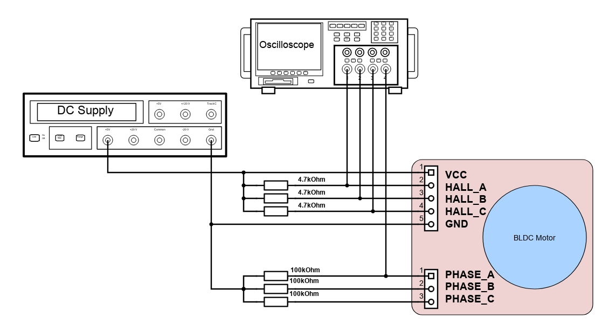

Determining Commutation Table of Sensored BLDC Motors
| Author | Mark Angelo Tarvina |
|---|---|
| mttarvina@gmail.com | |
| Category | Motor Control |
| Article Number | 1 |
| Date Published | 22.Oct.2023 |
| Date Updated | 03.Jan.2024 |
I. Overview
This tutorial describes a method on how to derive the commutation table of a Y-connected, sensored BLDC motor without access to the motor datasheet. In this method, we are going to look at the back-EMF of each motor phase and see how it corresponds to each hall sensor output. The idea here is that the back-EMF represents the voltage that should be applied by the motor driver/inverter to each phase of the motor during the commutation process. This is useful when controlling BLDC motors in sensored mode especially in motor control algorithms that fully utilize the hall sensor outputs (e.g. Six Step Commutation). Note that this method works regardless of the number of poles of the motor. Note also that in this method, you can arbitrarily assign the phase number/letter to each of the motor phase and hall sensor output. Once you labelled the motor phases and hall sensor outputs, you should stick to that configuration since that's where our generated commutation table will be applicable.
II. Prerequisites
This method requires the following tools/equipment/components:
- Oscilloscope (4-channel is preferred)
- 4pcs Oscilloscope probes
- 5V External Supply
- 3pcs 4.7kOhm resistors (any value between 1kOhm - 10kOhm is acceptable, used as pullup resistors)
- 3pcs 100kOhm resistors (used as 3-phase load resistors)
- Breadboard
- Jumper wires
- Any BLDC motor with hall sensor
III. Methodology
III.A. Setup
The diagram below shows the schematic of the test setup. An external 5V source is required to power the hall sensors of the motor. A 4.7kOhm resistor is used as a pullup for each hall sensor. Each phase of the motor is then loaded with a 100kOhm resistor, with the common node (equivalent to the internal neutral node of motor) connected to the oscilloscope and external supply's ground. A 4-channel oscilloscope will capture the waveforms of each hall sensor outputs (CH1-CH3) as well as the phase to neutral voltage of the motor (CH4).

III.B. Procedure
Connect your oscilloscope probes as shown in Section III.A. Make sure that you already labelled each motor phase and each hall sensor outputs arbitrarily. Usually the wire color of each motor phase corresponds to the same wire color on each hall sensor output. So if one phase of the motor is colored yellow, then there usually is a corresponding hall sensor wire of the same color. an example motor is shown below:
Mount your motor in a stable platform and find ways for you to spin the shaft/rotor mechanically. You can attach the rotor shaft to a hand drill or you can wrap a knot around the shaft a few times so that when you pull the knot, it will spin the rotor shaft. Our goal here is to generate the back emf waveforms of the motor and capture the hall sensor outputs at the same time.
Adjust your scope view to capture at least one cycle of each hall sensor output. Take note of this pattern and make sure to capture this same pattern as we move along each phase of the motor.
Spin the rotor shaft while probing Phase A of the motor. Make sure to spin it only in one direction. You can arbitrarily assign this spin direction as either clockwise or counter-clockwise depending on your preferred orientation. Capture the waveform and make sure that each hall sensor output displays at least one cycle.
Repeat step #4 for Phases B and C.
The shape of the back emf waveform will indicate what time of motor you are using. If it is trapezoidal, then your motor is a BLDC. If it is sinusoidal, then your motor is a PMSM (Permanent Magnet Synchronous Motor).
IV. Waveforms
IV.A. Phase A to Neutral (GND)
CH1: Hall A; CH2: Hall B; CH3: Hall C; CH4: Phase A - Neutral
IV.B. Phase B to Neutral (GND)
CH1: Hall A; CH2: Hall B; CH3: Hall C; CH4: Phase B - Neutral
IV.C. Phase C to Neutral (GND)
CH1: Hall A; CH2: Hall B; CH3: Hall C; CH4: Phase C - Neutral
IV.D. Decoding BEMF Pattern
Once the three waveforms have been captured, we can dissect it into 6 sections corresponding to each unique hall sensor state combination. We then look at the polarity of the back-emf for each phase. We assigned logic 1 when the hall sensor waveform is HIGH and logic 0 when the hall sensor waveform is LOW. Lastly, we label each waveform as follows:
V. Derived Commutation Table
Looking at the waveforms from the previous section, we now arrive at the commutation table shown below. Note that this commutation table will rotate the motor to a specific direction that you indicated in part III.B.4. This will be your forward commutation. Notice that in each commutation sector, one phase will always be positive (+), one phase will be negative (-), and one phase will be zero (0), and no two phases will have the same state.
| Sector | 1 | 2 | 3 | 4 | 5 | 6 |
|---|---|---|---|---|---|---|
| Electrical Degrees | 60 | 120 | 180 | 240 | 300 | 360 |
| HALLA | 1 | 1 | 1 | 0 | 0 | 0 |
| HALLB | 0 | 0 | 1 | 1 | 1 | 0 |
| HALLC | 1 | 0 | 0 | 0 | 1 | 1 |
| VA | - | - | 0 | + | + | 0 |
| VB | + | 0 | - | - | 0 | + |
| VC | 0 | + | + | 0 | - | - |
Since the motor driver/inverter is usually powered from a single DC supply, we cannot provide a negative voltage similar to the back-EMF waveform but rather, we can assign the following states for each inverter phase:
| Inverter State | High Side Switch | Low Side Switch | Phase Voltage |
|---|---|---|---|
| HIGH | ON | OFF | V_supply |
| HIZ | OFF | OFF | Floating |
| LOW | OFF | ON | 0V |
With this, we can now complete the commutation table with the corresponding drive state for each inverter phase. We can also include an integer equivalent of the hall sensor states with the output of HALLC as Bit0, HALLB as Bit1, and HALLA as Bit2 (most significant bit). This is useful later on when programming the motor control code in a microcontroller.
| Sector | 1 | 2 | 3 | 4 | 5 | 6 |
|---|---|---|---|---|---|---|
| Electrical Degrees | 60 | 120 | 180 | 240 | 300 | 360 |
| HALLA | 1 | 1 | 1 | 0 | 0 | 0 |
| HALLB | 0 | 0 | 1 | 1 | 1 | 0 |
| HALLC | 1 | 0 | 0 | 0 | 1 | 1 |
| VA | - | - | 0 | + | + | 0 |
| VB | + | 0 | - | - | 0 | + |
| VC | 0 | + | + | 0 | - | - |
| DRIVE A | LOW | LOW | HIZ | HIGH | HIGH | HIZ |
| DRIVE B | HIGH | HIZ | LOW | LOW | HIZ | HIGH |
| DRIVE C | HIZ | HIGH | HIGH | HIZ | LOW | LOW |
| HALL State (Hall A = MSB) | 5 | 4 | 6 | 2 | 3 | 1 |
Lastly, motor control heavily utilizes PWM to modulate the voltage applied to each motor phase. The table above can be modified for each specific PWM modulation scheme. For example: for high side PWM modulation, the resulting commutation results to (replacing HIGH state with PWM):
| Sector | 1 | 2 | 3 | 4 | 5 | 6 |
|---|---|---|---|---|---|---|
| Electrical Degrees | 60 | 120 | 180 | 240 | 300 | 360 |
| HALLA | 1 | 1 | 1 | 0 | 0 | 0 |
| HALLB | 0 | 0 | 1 | 1 | 1 | 0 |
| HALLC | 1 | 0 | 0 | 0 | 1 | 1 |
| VA | - | - | 0 | + | + | 0 |
| VB | + | 0 | - | - | 0 | + |
| VC | 0 | + | + | 0 | - | - |
| DRIVE A | LOW | LOW | HIZ | PWM | PWM | HIZ |
| DRIVE B | PWM | HIZ | LOW | LOW | HIZ | PWM |
| DRIVE C | HIZ | PWM | PWM | HIZ | LOW | LOW |
| HALL State (Hall A = MSB) | 5 | 4 | 6 | 2 | 3 | 1 |
VI. Reverse Commutation
The derived commutation table that we created will only rotate the motor in one specific spin direction (forward commutation). If you want to derive the reverse commutation of the same motor, there is no need to repeat the earlier steps. Using the derived commutation table in Part V, just swap out the inverter drive states as follows:
- From LOW to PWM
- From PWM to LOW
- Retain HIZ state
The resulting reverse commutation will now be:
| Sector | 1 | 2 | 3 | 4 | 5 | 6 |
|---|---|---|---|---|---|---|
| Electrical Degrees | 60 | 120 | 180 | 240 | 300 | 360 |
| HALLA | 1 | 1 | 1 | 0 | 0 | 0 |
| HALLB | 0 | 0 | 1 | 1 | 1 | 0 |
| HALLC | 1 | 0 | 0 | 0 | 1 | 1 |
| VA | - | - | 0 | + | + | 0 |
| VB | + | 0 | - | - | 0 | + |
| VC | 0 | + | + | 0 | - | - |
| DRIVE A | PWM | PWM | HIZ | LOW | LOW | HIZ |
| DRIVE B | LOW | HIZ | PWM | PWM | HIZ | LOW |
| DRIVE C | HIZ | LOW | LOW | HIZ | PWM | PWM |
| HALL State (Hall A = MSB) | 5 | 4 | 6 | 2 | 3 | 1 |